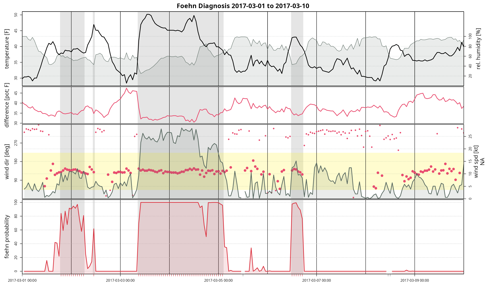

vignettes/tsplot.Rmd
tsplot.RmdTime Series Plot
TODO: Explain the default plot.
# Loading the demo data set for Tyrol
data <- demodata("tyrol")
# Faking ffx (wind gusts) as we don't have them in the data set.
data$ffx <- runif(nrow(data), 1.4, 1.7) * data$ff
data$crest_ffx <- runif(nrow(data), 1.5, 2.5) * data$crest_ff
# Show data set
head(data, n = 3)## dd ff rh t crest_dd crest_ff crest_rh crest_t diff_t
## 2006-01-01 01:00:00 171 0.6 90 -0.4 180 10.8 100 -7.8 2.87
## 2006-01-01 02:00:00 268 0.3 100 -1.8 186 12.5 100 -8.0 4.07
## 2006-01-01 03:00:00 115 5.2 79 0.9 181 11.3 100 -7.4 1.97
## ffx crest_ffx
## 2006-01-01 01:00:00 0.9230240 16.96014
## 2006-01-01 02:00:00 0.4903233 29.24962
## 2006-01-01 03:00:00 7.4799944 27.61689
# Estimate a foehnix classification model
filter <- list(dd = c(43, 223), crest_dd = c(90, 270))
mod <- foehnix(diff_t ~ ff + rh, data = data, filter = filter,
switch = TRUE, verbose = FALSE)
# Alternative model. Does not use data from the crest station Sattelberg
alt_filter <- list(dd = c(43, 223))
alt_mod <- foehnix(ff ~ rh, data = data, filter = alt_filter, verbose = FALSE)
# Plotting windroses
tsplot(list("Enhanced" = mod, "Alternative (basic)" = alt_mod), start = "2015-05-01", end = "2015-05-10")
Different Styles
TODO: The style argument (input to tsplot.control) allows to change between different styles provided by the foehnix package. The styles can be modified by the user (see next section).
tsplot(list("Enhanced" = mod, "Alternative (basic)" = alt_mod),
start = "2015-05-01", end = "2015-05-10",
style = "advanced")
tsplot(list("Enhanced" = mod, "Alternative (basic)" = alt_mod),
start = "2015-05-01", end = "2015-05-10",
style = "bw")
Modify styles
TODO: No matter which style one takes, one is always allowd to overwrite specific properties of such as line type, color, …. This allows for high customization of the plots.
As an example we change the appearance of the observed air temperature (t) and disable two parameters (crest_t and diff_t) by setting them to NULL.
tsplot(list("Enhanced" = mod, "Alternative (basic)" = alt_mod),
start = "2015-05-01", end = "2015-05-10",
t = list(col = "blue", lty = 3, lwd = 4),
crest_t = NULL, # Disable crest temperature
diff_t = NULL, # Disable temperature difference
style = "advanced")
The same can, of course, be done with the black and white style:
tsplot(list("Enhanced" = mod, "Alternative (basic)" = alt_mod),
start = "2015-05-01", end = "2015-05-10",
t = list(col = "orange", type = "o", pch = 18),
style = "bw")
As an alternative, one of the default style files can be modified and used as a custom style.
# Loading demo data set, change units
data <- demodata()
data$t <- data$t * 1.8 + 32 # Celsius to Fahrenheit
data$diff_t <- data$diff_t * 1.8 + 32 # Celsius to Fahrenheit
data$ff <- data$ff * 1.943844 # m/s to knots
filter <- list(dd = c(43, 223), crest_dd = c(90, 270))
mod2 <- foehnix(diff_t ~ rh + ff, data = data, filter = filter, switch = TRUE)
# Use "custom_demo.csv" shipped with the package
style_file <- system.file(package = "foehnix", "tsplot.control/custom_demo.csv")
tsplot(mod2, style = style_file,
start = "2017-03-01", end = "2017-03-10",
windsector = list(c(43, 223)))
Highlight Wind Sectors
TODO: Wind sectors (as for the windrose plot) can be used to set specific highlights. This optional argument is also forwarded to tsplot.control.
tsplot(list("Enhanced" = mod, "Alternative (basic)" = alt_mod),
start = "2015-05-01", end = "2015-05-10",
windsector = list("Sector A" = c(88, 178), "Test Sector" = c(340, 20)),
foehnix_windsector = list(col = "orange"), # Custom color
style = "bw")## [1] 340 20